商務艙、果醬鋁管、一隻鬧了整路的小米——延長賽的轉場日。
告別一座城市的方式，從來不是儀式，是日常的最後一次。
里斯本的最後一個夜晚，是從一根薯條開始收尾的。前一晚 McDonald's 打包回飯店，米米——本名施湉曦，再過一個月就滿兩歲了——戴上她那副粉色愛心墨鏡，光著身子只剩一片尿布,拎著一盒薯條在房間裡走起了台步。沒有人教她,她就是知道:墨鏡要戴、薯條要拎、下巴要抬。這是 Day 10 那張 McDonald's 收據之外，沒有印在紙上的片尾彩蛋。
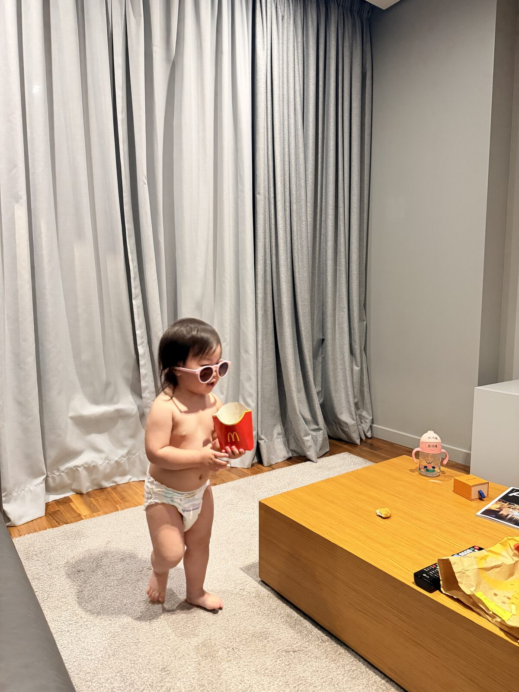
然後我們走到窗邊。Marquês de Pombal 圓環在深夜裡空蕩蕩,只有打了光的紀念碑亮著——龐巴爾侯爵,1755 大地震後用鐵腕把里斯本重新蓋起來的那個人,站在柱頂,腳邊蹲著一頭象徵權力的獅子。柱子背後那條燈光往上延伸的,是自由大道 Avenida da Liberdade。
就是這個圓環旁邊的 Eduardo VII 公園,藏著那支我們始終沒去收的 LISBOA 字牌。Day 10 我們決定不追了,留給下次。所以這張深夜空景,某種程度上也是跟那支字牌的遙遙告別——有些風景,是留著當作「還會再來」的理由。
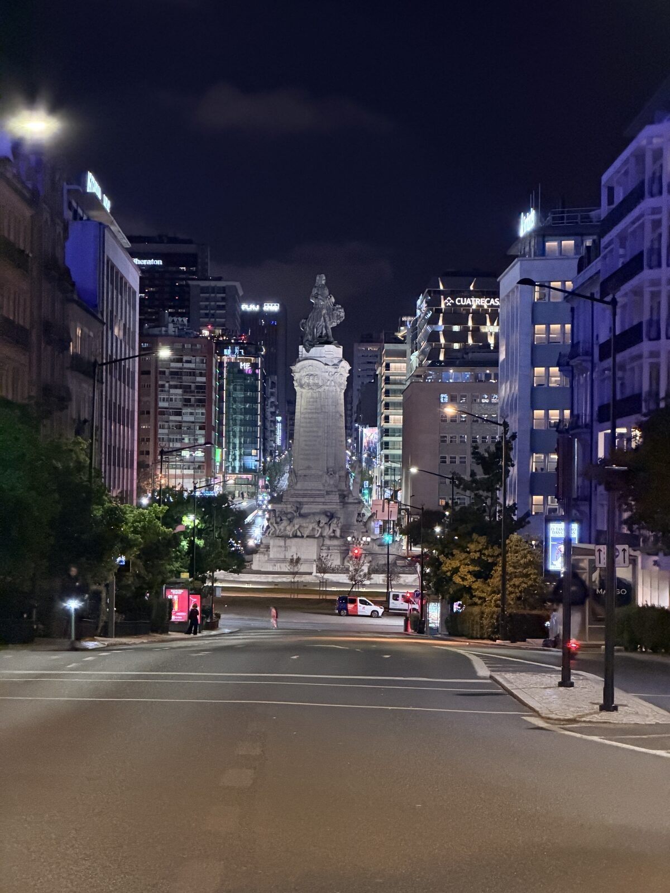
里斯本的最後一個早晨,我們選了一家童話咖啡店。
我說「要去一家果醬店」,結果第一站是 Grand Café Lisboa——其實不是果醬店,是一家開在 Marquês de Pombal 圓環邊的網美咖啡烘焙坊。但「果醬」的聯想沒有錯,因為它整間店就是花團錦簇、莓果色調,門口那整片桃紅九重葛假花牆,是它的招牌打卡點。對照昨晚那張夜景——白天我們又回到了同一個圓環,只是這次是來吃早餐。
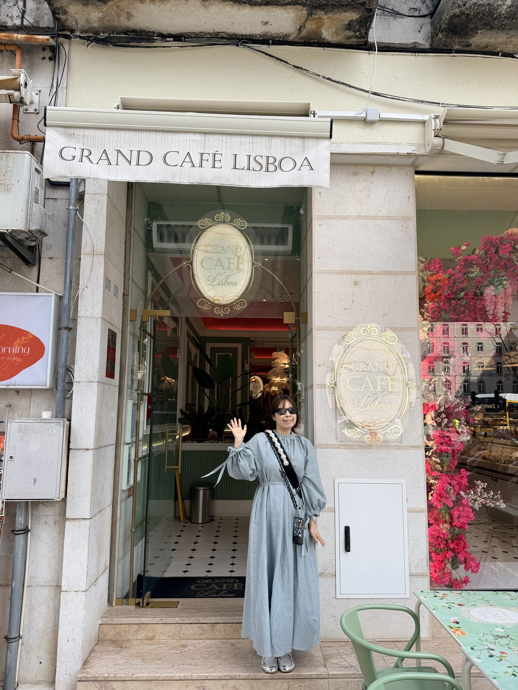
店裡是「英式殖民地 × 草原動物」的風格:磚紅色滿版手繪斑馬壁紙、白色線板、一隻真人大小的旋轉木馬斑馬立在柱子上。米米穿著灰色連帽外套站在斑馬底下比手指,背景那面斑馬牆配上她,整個就是一頁童書插畫。
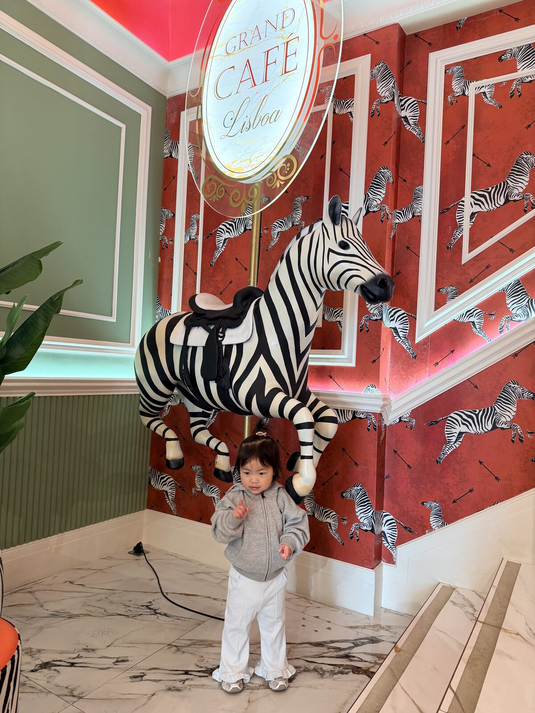
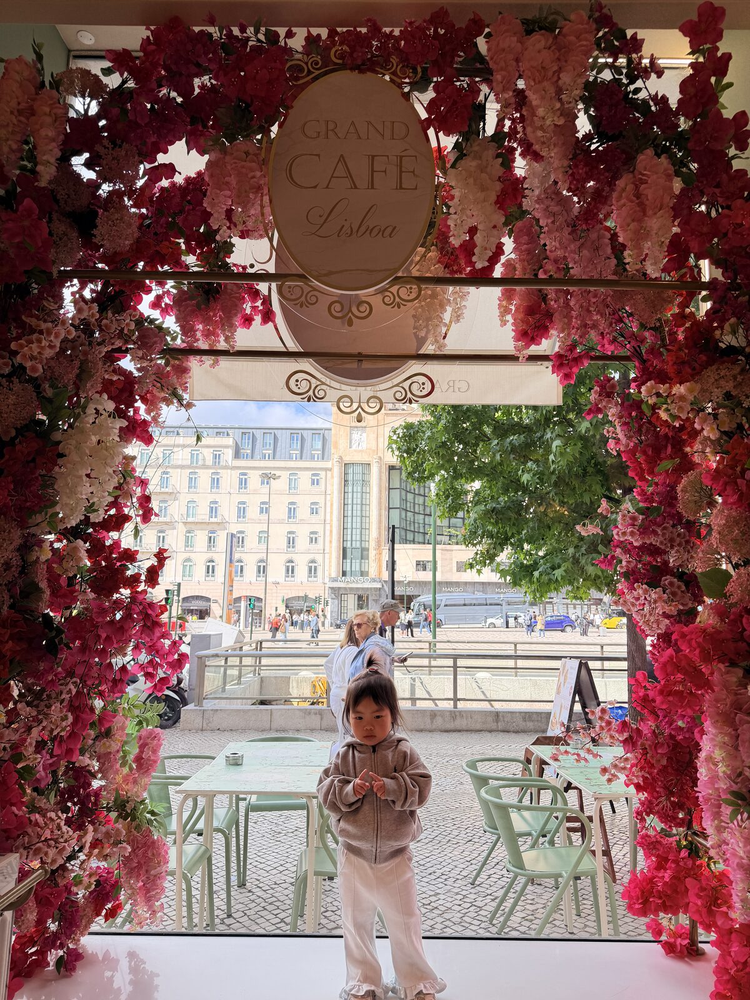
從店內往外拍,整個門框被桃紅、粉、白的假花包成一個花洞,框住對街的 MANGO 旗艦店和那棟裝飾藝術老建築。米米小小一隻站在花洞中央。
早午餐很簡單:一份撒了麵粉的全麥水晶麵包夾酪梨番茄莫札瑞拉、一個油亮的炒蛋可頌、鹹焦糖拿鐵、草莓冰抹茶。可頌很好吃。可惜我們太飽,沒點那些金色圓筒蛋糕——那些蛋糕真的很漂亮。但有時候沒點的那一個,反而留在記憶裡更久;就像那支沒去收的字牌一樣。
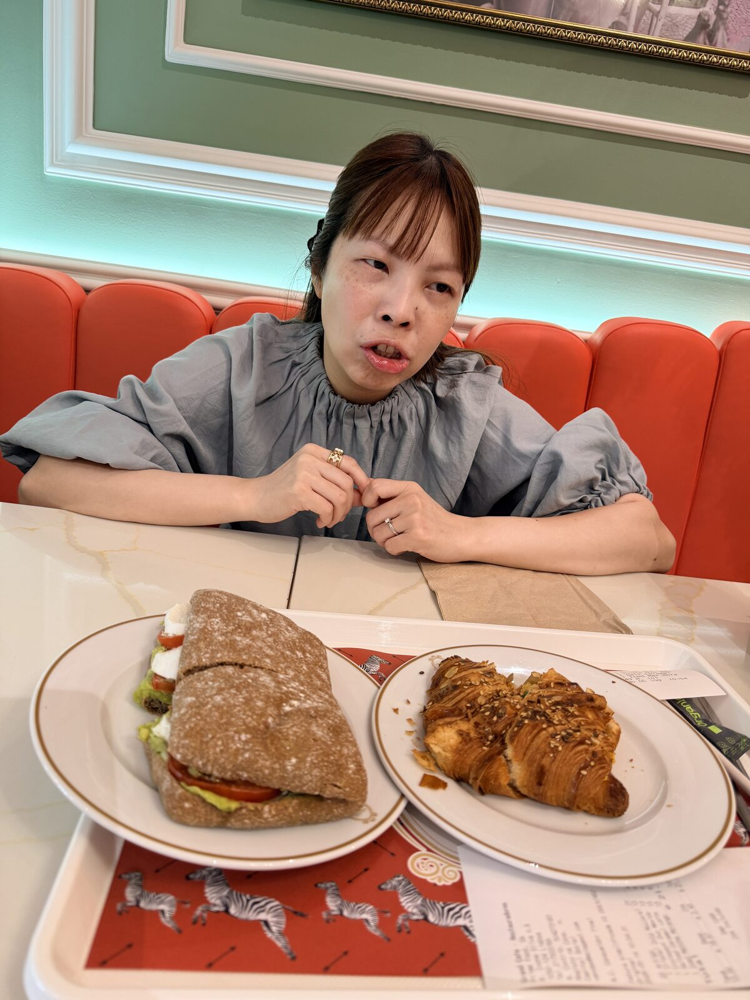
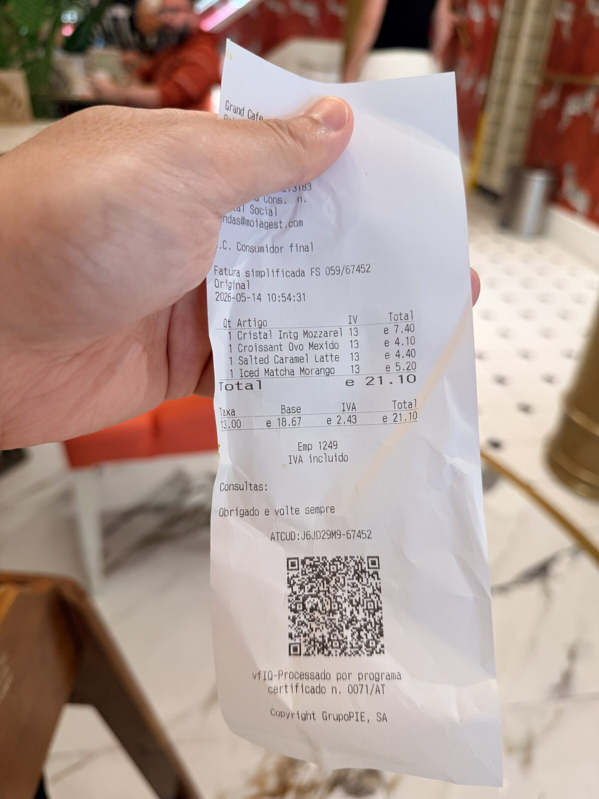
那些遠景,不是搭電梯的副產品 — 是用走的才換到的視角。
Elevador de Santa Justa——里斯本最有名的鋼鐵升降梯,1902 年啟用,新哥德式的鑄鐵塔身,那些尖拱、玫瑰窗、藤蔓鏤空全是鐵鑄的。設計師 Raoul Mesnier du Ponsard 是法國工程師,據說是艾菲爾的學生(不是艾菲爾本人,這點常被誤傳)。
我們沒搭。照這家人的慣例,用走的、爬樓梯上去。所以才有了 Baixa 那整片橘色屋頂、Carmo 修道院沒有屋頂的拱頂骨架、山頂飄著國旗的聖喬治城堡——這些遠景。別人排隊搭百年電梯,我們用腳把里斯本的最後一個上午爬完。
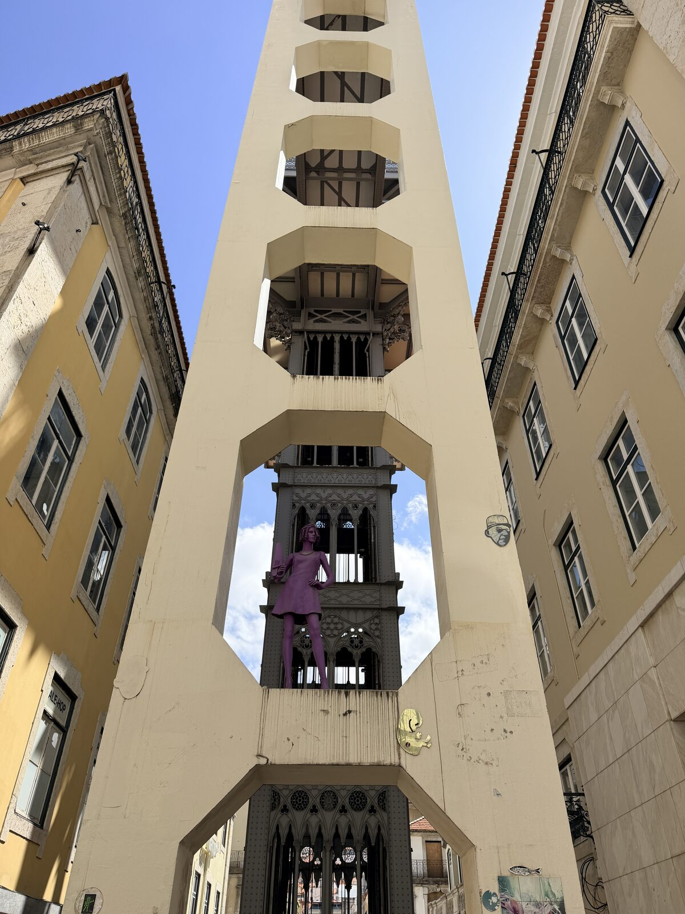
爬到上面那層觀景平台,Baixa 在腳下攤開成一片紅瓦的海。阿米靠著柱子,背後是山頂的聖喬治城堡;一家三口靠著欄杆,遠方就是那座 1755 大地震後沒有重建、留下骨架的 Carmo 修道院——里斯本最美的廢墟。
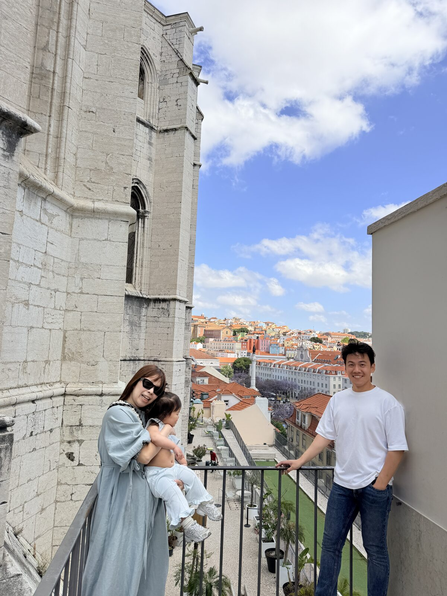
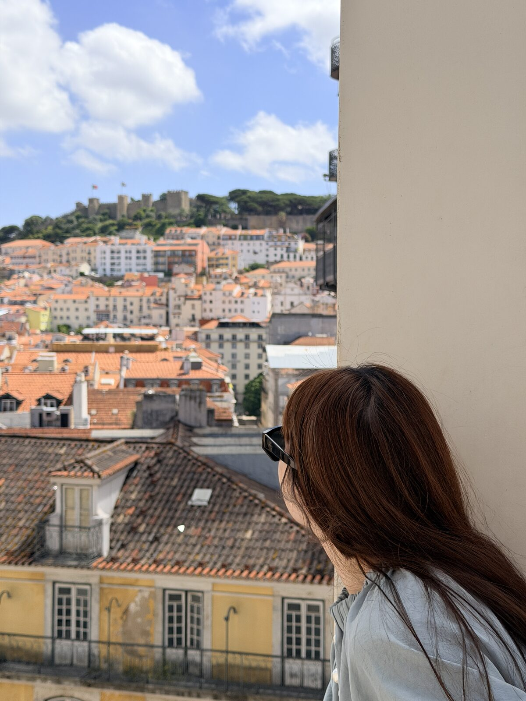
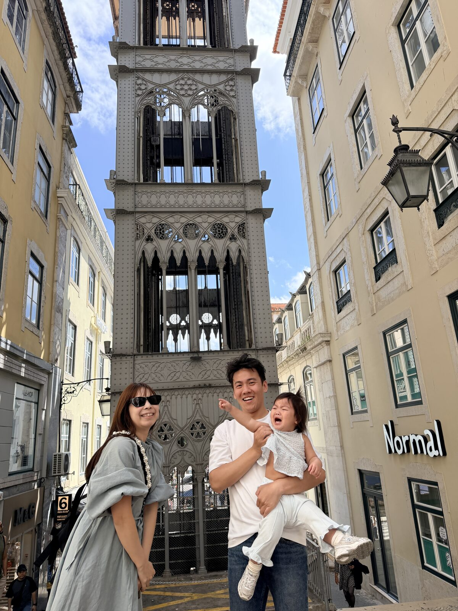
下山的路上,米米開始想睡,趴在阿米肩上;石階、逆光、長長的影子,還有牆上一小幅藍白磁磚畫。再往前走,她又自己醒過來、自己要走——小小一隻走在 ELIE SAAB 的櫥窗前,阿米在後面看著。里斯本給我們的最後一個上午,大概就是這個節奏:抱起來、放下來、再抱起來。
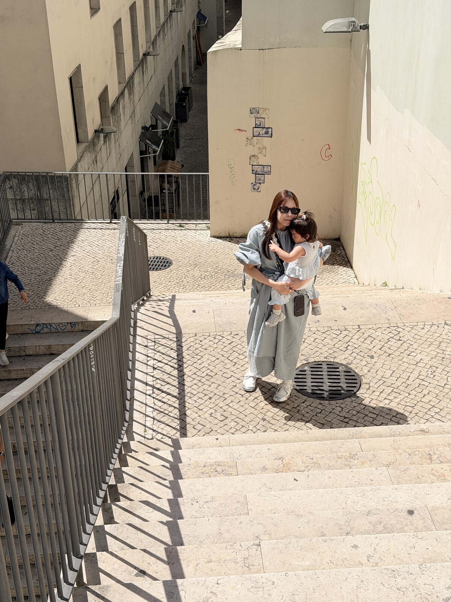
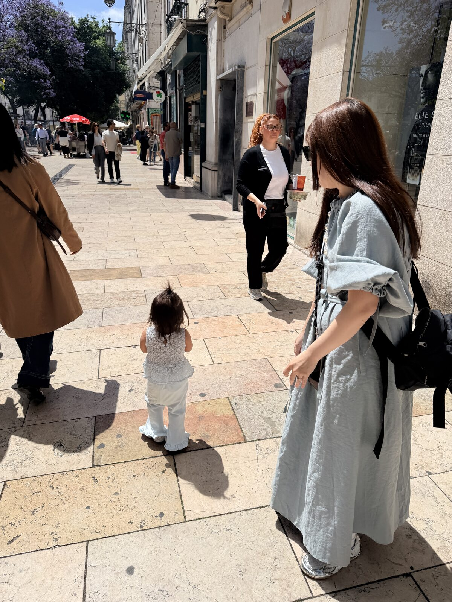
里斯本最後的打包 — 把葡萄牙裝進六個鋁管裡帶走。
這才是真正的「果醬店」:meia dúzia——字面意思就是「半打、六個」,所以 logo 是一個大大的「6」。但它真正出名的,是把果醬、蜂蜜裝進像顏料管、像牙膏管一樣的鋁管裡。金色管是蜂蜜:百花蜜、迷迭香蜜、栗子蜜、橙花蜜;彩色管是果醬:藍莓、櫻桃、草莓⋯⋯棕色管是巧克力醬。試吃台上立著一塊牌子:「por favor, não mexer / please do not touch」——別自己亂擠,要店員服務。
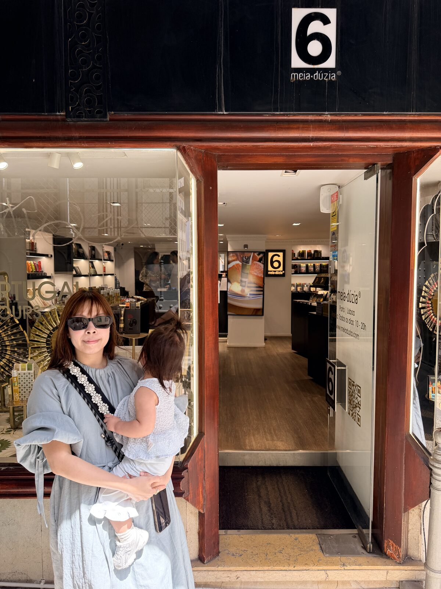
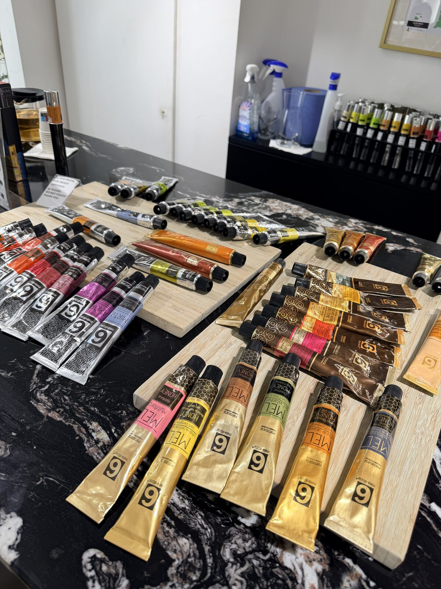
這次的伴手禮就是在這裡打包的,買了很多管。其中兩個口味特別跳:辣味草莓、還有草莓薄荷——辣與莓果的衝突感,正是 meia dúzia 的品牌個性,一般果醬店不會這樣玩。
如果說 Day 10 我們在里斯本買的 LV Neverfull 是「法國品牌回到法國的家」,那 meia dúzia 剛好相反:它是純葡萄牙的設計品牌,是里斯本最後塞給我們的、最「葡萄牙製造」的紀念品。一個是要帶回家鄉的法國,一個是要帶去法國的葡萄牙。
葡萄牙給我們的最後一口,在踏進空橋之前。
機場裡的最後一站是 Confeitaria Peixinho,招牌主打「OVOS MOLES DE AVEIRO」。Ovos moles 是葡萄牙中部潟湖城 Aveiro 的傳統甜點——蛋黃加糖熬成餡,包在一層薄薄的米紙殼裡,做成貝殼、魚、橡實、桶子這些海洋造型,因為 Aveiro 是「葡萄牙的威尼斯」。它甚至有歐盟 PGI 地理標示保護。
阿米咬了一口,給了一個非常精準的台灣式翻譯:「吃起來很像蛋黃月餅的泥狀版。」——確實,純蛋黃加糖、綿密濃稠,就像月餅那層蛋黃餡被放大、軟化、包進米紙裡。有趣的是,ovos moles 跟台灣蛋黃酥某種程度上是異曲同工:都是古法為了「消化掉大量蛋黃」而發明的甜點。歐洲的修女用蛋白漿衣服,於是給蛋黃找了這條濃到化不開的出路。旁邊那盒「巧克力沙丁魚」,則是把海鮮做成甜點的葡萄牙幽默。
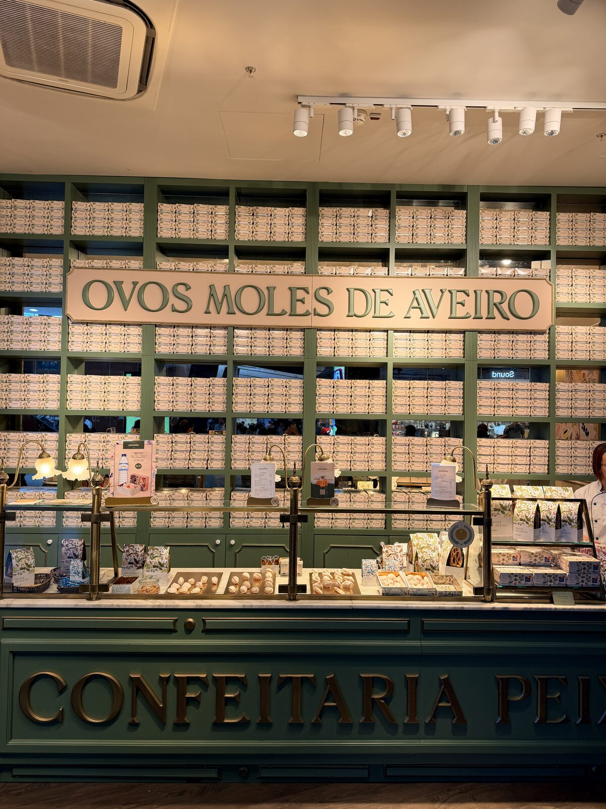
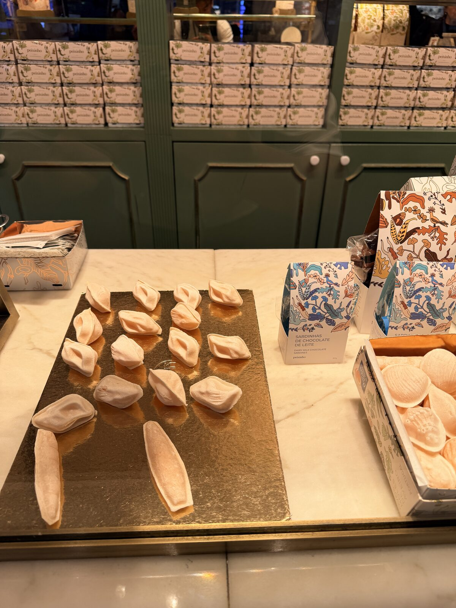
延長賽繼續 — 從里斯本的 13 號命運線,飛向巴黎。
候機室的玻璃外,那道紅藍斜紋的尾翼揭曉了今天的主角:Air France,機身編號 F-GKXS。因為昨天是阿米的生日,延長賽繼續,所以這趟 Lisboa → Paris 我們坐商務艙。
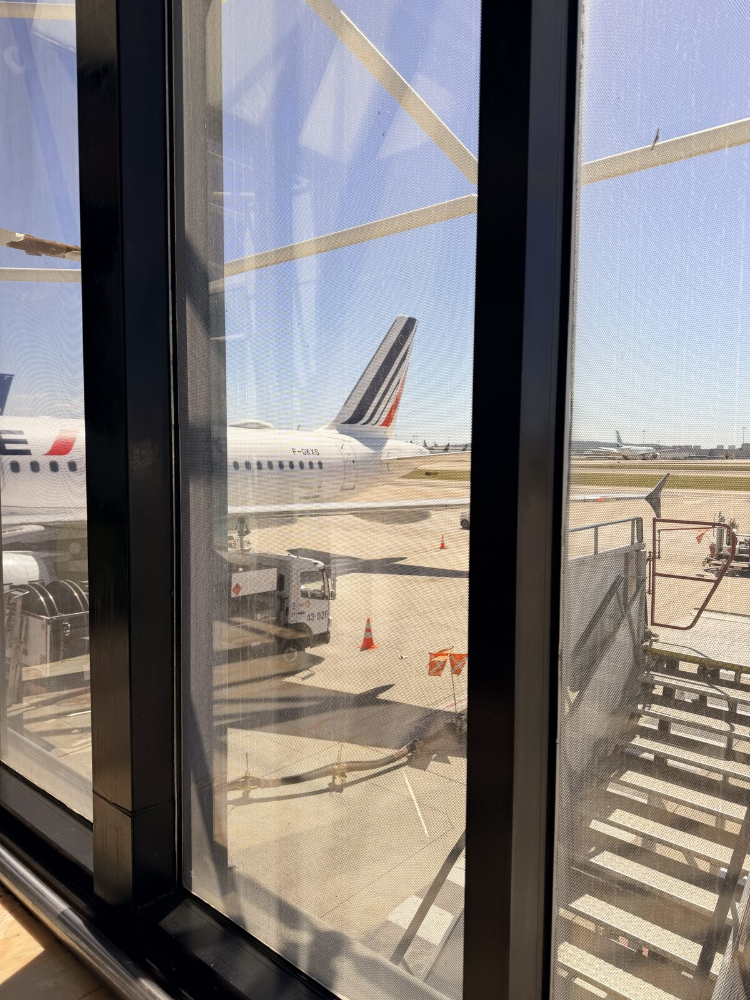
然後就是這趟商務艙的真實版本了:優雅的座位,加上一位完全不優雅的乘客。米米鬧了一整路。阿米戴著口罩抱著她靠窗坐,她腿上扣著橘色的嬰兒安全帶,手裡抓著手機看影片——只有這個能讓她安靜三分鐘。
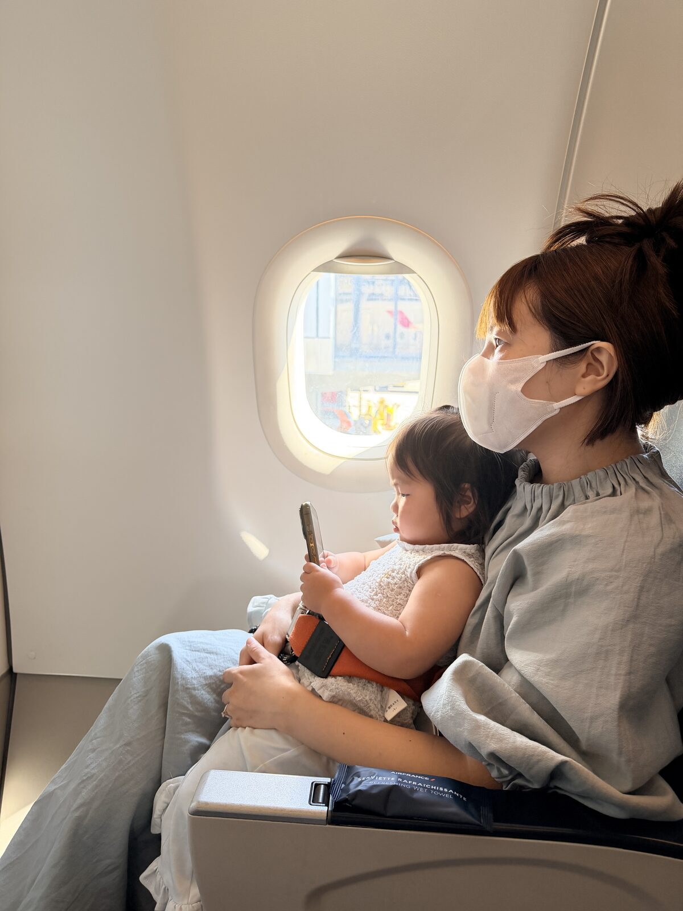
餐來了。Air France 商務艙的主菜,卡片上印著掛名主廚 François Adamski,註明「Meilleur Ouvrier de France」——MOF,法國職人工藝的最高榮譽,他還是 2001 年博古斯金獎得主。一架次音速的飛機,配一份 MOF 設計的菜單:這就是「商務艙慶祝日」的 vibe。
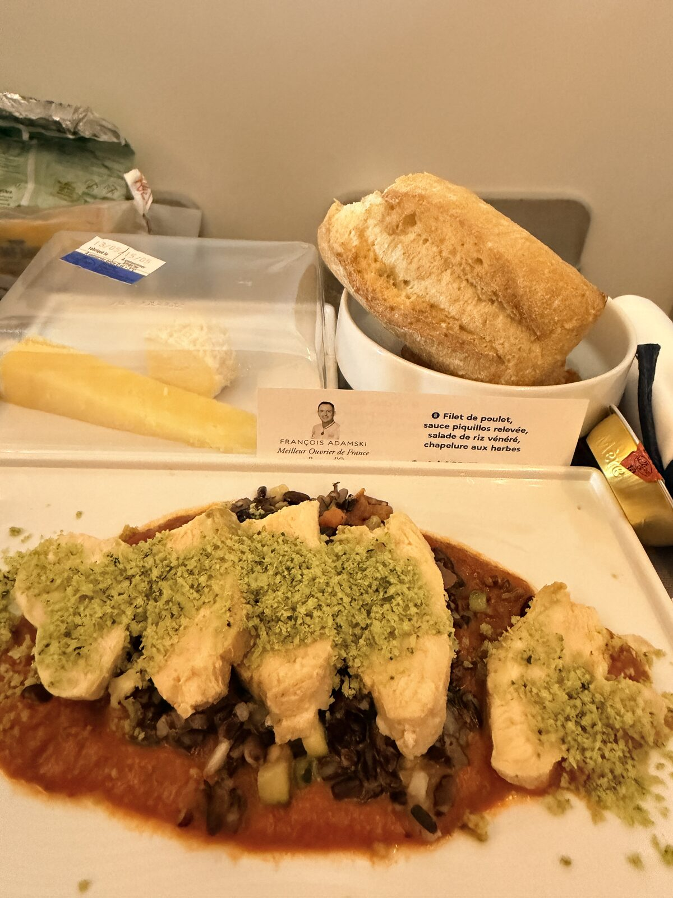
米米在阿米腿上,沖天炮髮型整個炸開,眼睛盯著餐盤看。兩個半小時的航程,她大概只有看著食物的時候是真的安靜的。
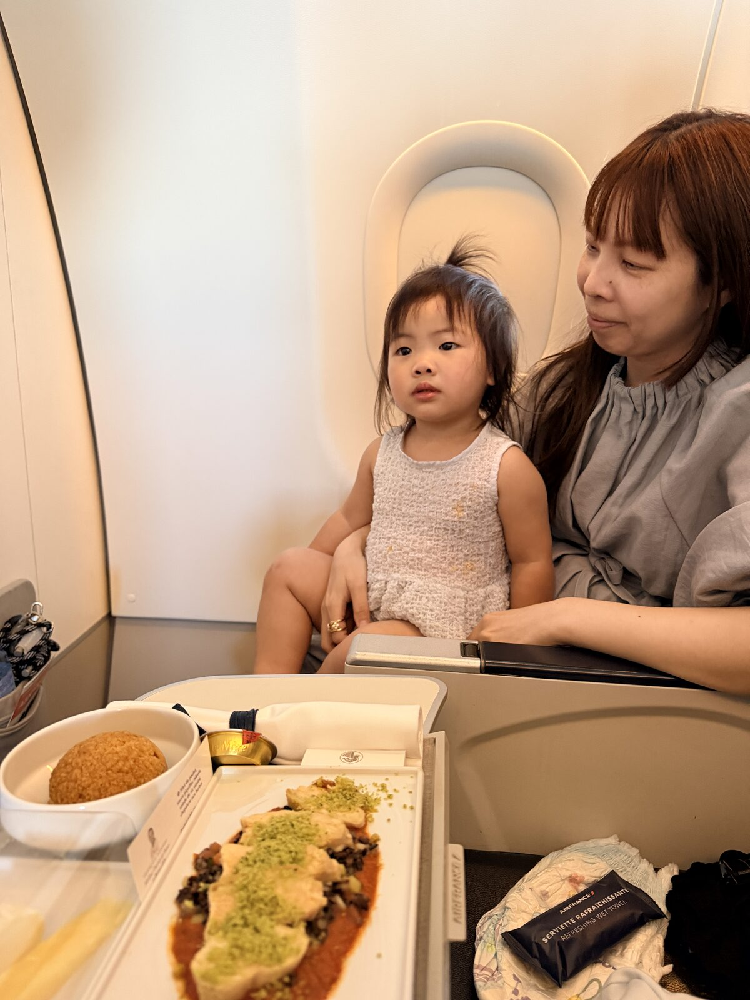
鬧了一整路的小米,
終於在最後睡著了。
CDG · 空橋 · 抵達巴黎
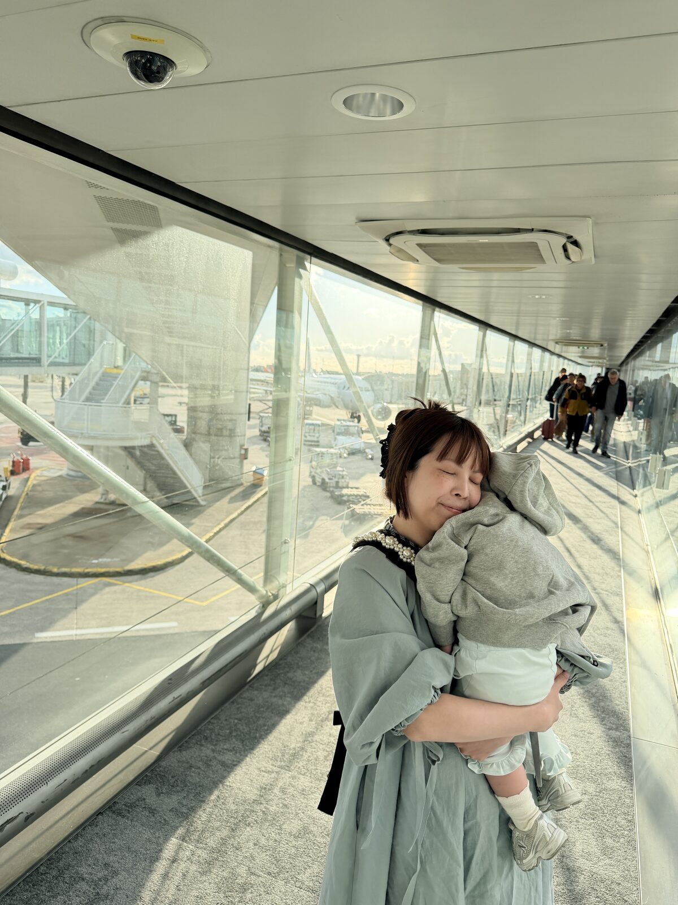
落地戴高樂。空橋裡逆著光,阿米閉著眼睛、抱著終於睡著的米米臉貼臉,後面的旅客拖著行李往前走。又累又滿足的那種表情,不用任何文字。抵達巴黎了。
離開里斯本是看一座圓環,抵達巴黎第一個地標,是一架不再飛的飛機。
從計程車裡,隔著機場圍籬,我們看到那架靜態保存的 Concorde 協和號,機身編號 F-BVFF,掛著 Air France 的舊塗裝,立在 CDG 外圍當紀念碑。
協和號 1976 年商業運營,巡航兩倍音速,1.5 小時飛完巴黎到紐約。那它為什麼不繼續飛?答案不是速度,是經濟學。它油耗驚人、只能載約 100 人,票價貴到只有富豪搭得起;音爆讓它只能飛海上航線,航線網被鎖死;2000 年的空難重創了它「奢華安全」的形象;接著 911 之後高端商務旅行萎縮——英航與法航在 2003 年讓它一起退役。
它輸的從來不是速度。它是冷戰時代一個「國家面子工程」的浪漫產物,技術上輝煌,卻從沒真正賺過錢。協和號退役後,民航再也沒有超音速客機;到了今天,我們跨洋飛行的速度,其實跟 1960 年代差不多。
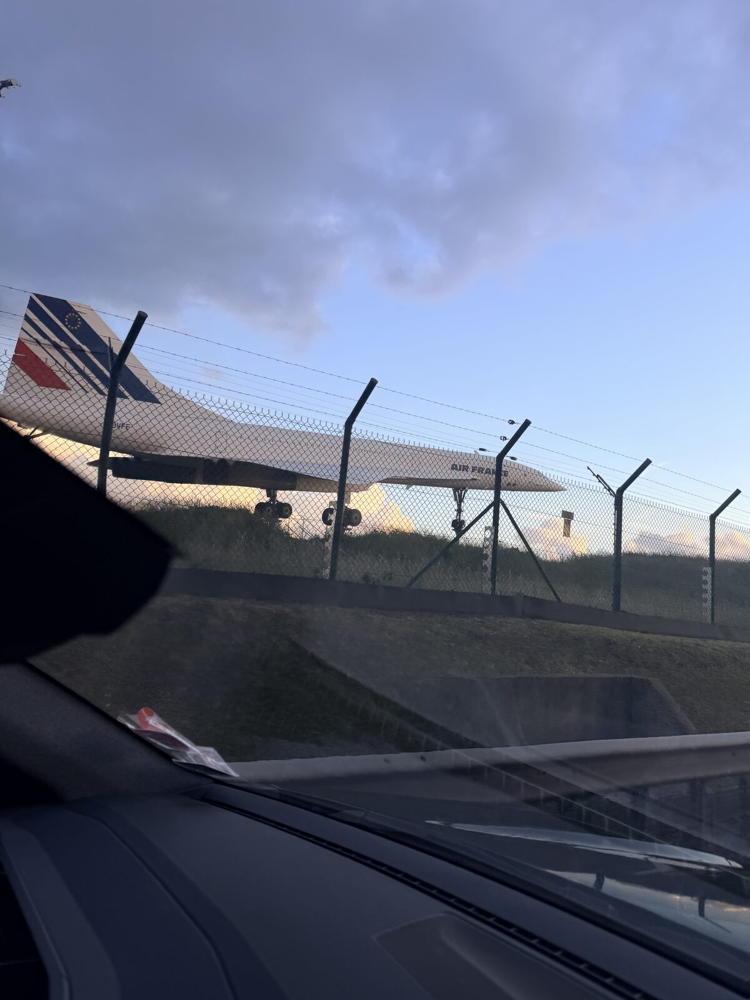
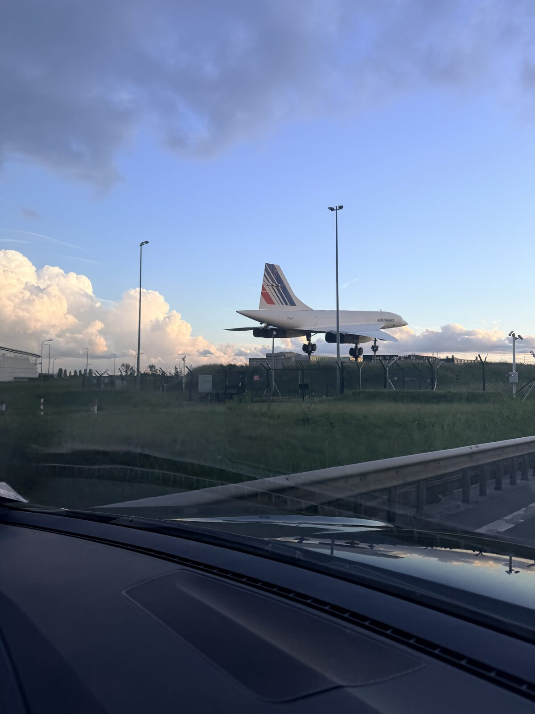
你今天搭的 Air France 商務艙——舒適、有 MOF 主廚菜單——飛的是次音速。這架靜靜停在草地上的協和號,剛好是它的對照組:速度的浪漫,與務實的奢華。人類曾經能用兩倍音速優雅地飛越大西洋,然後我們算了算帳,決定不要了。
里斯本到巴黎,城市換了,但「圓環中央立一座國家記憶」這個母題重複了。
進市區的路上,傍晚的藍灰雲層被夕陽燒出一道珊瑚粉,配上 凱旋門 Arc de Triomphe 的米白石材——天空替我們調好了今天的色調。
凱旋門是拿破崙 1806 年下令興建的,紀念奧斯特里茨戰役的勝利,但工程拖了 30 年,1836 年才完工——拿破崙本人沒能活著看到,他最後是 1840 年遺體歸葬時,棺木從這座門下穿過。它高 50 公尺,站在戴高樂廣場,舊名「星形廣場」,因為有 12 條大道從這裡呈星芒狀放射出去。門下是 1920 年設置的無名戰士墓,火焰每天傍晚重新點燃。
想起 Day 10——我們在里斯本拍 Marquês de Pombal 圓環,還有那座大戰陣亡將士紀念碑。巴黎的第一個地標,又是一座圓環、一座戰爭紀念碑。城市換了,但「在圓環中央立一座國家的記憶」這件事,重複了。
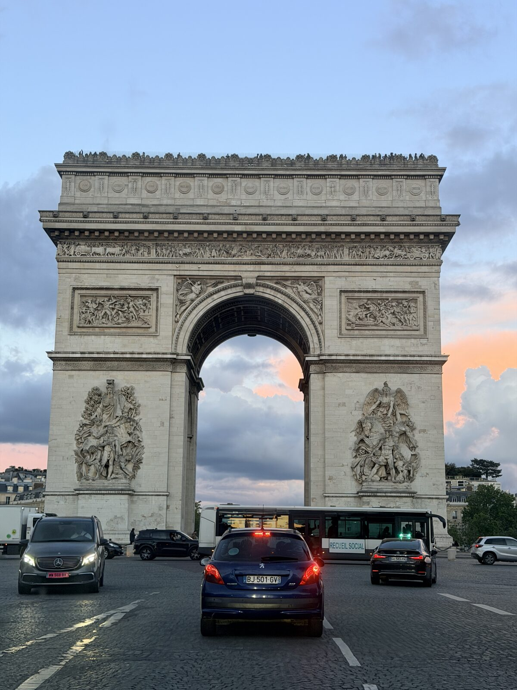
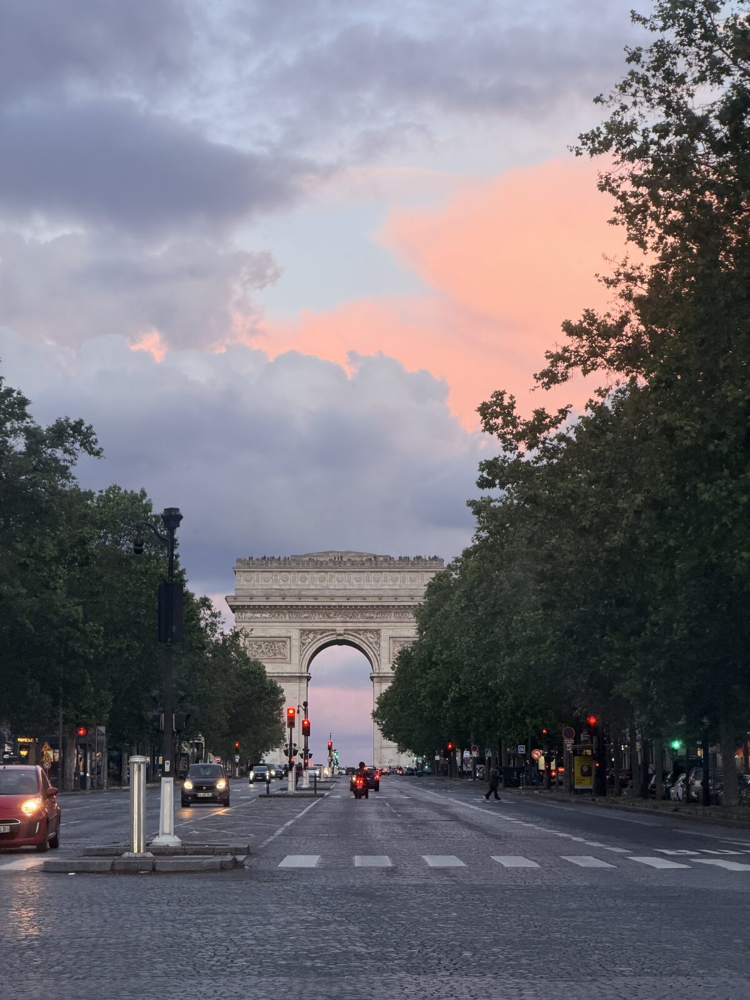
巴黎第一晚教的事:不要太快下結論 — 你看到的,可能只是背面。
車經過香榭麗舍那家 Swatch。當年 MoonSwatch 剛出的時候,全球門市大排長龍、限購、黃牛橫行。我從車窗看過去——玻璃門裡冷冷清清,櫥窗在放潛水系列。「欸,根本沒人排隊啊?」我心想,看吧,熱潮退了,時代變了。
結果——排隊的人在店的另一邊。而且,已經不少人了。傻眼。
我以為熱潮退了,其實人潮只是在我看不到的那一面;傳奇還在排,是我的視角騙了我。這跟協和號剛好湊成一組漂亮的雙拍:一個是真的退潮了(協和號),一個是你以為退潮、其實沒有(MoonSwatch)。巴黎第一個晚上,連著給我看了兩個關於「傳奇」的版本。
夜裡的香榭麗舍:電動滑板車、長椅上的人群、梧桐樹下的路燈。鏡頭一路滑過去,最後停在 Swatch 門口——那裡,真的有人在排。
「我飯店在旁邊」——所以那不是觀光,是回家的路。
謎底揭曉:我們住的是 CABBIE Hôtel Parisien,四星,在香榭麗舍、凱旋門的步行範圍內。整棟的識別色是一種很濃的克萊因藍——藍色門面、藍色木拼牆,配上奶白沙發、深色原木、藝術掛畫。地點非常好,「難怪很貴」。「CABBIE」是計程車司機的意思,旅館用這個名字、識別色又這麼跳,挺俏皮的。
一進門就是精品旅館花錢的地方:大玻璃罐裝滿彩色糖果,立牌寫著「servez-vous! / help yourself!」;lobby 的迎賓水是兩罐 infused water——一罐莓果蘋果、一罐檸檬薄荷。米米一手扶著桌、一手已經摸上糖果罐,眼神鎖定。
想起 Day 10 的伏筆:我們在里斯本買的 LV Neverfull,是「法國品牌回到法國的家」。而現在,我們自己也住進了那條精品大道上。LV 回到法國的家,我們也住到了那條街。
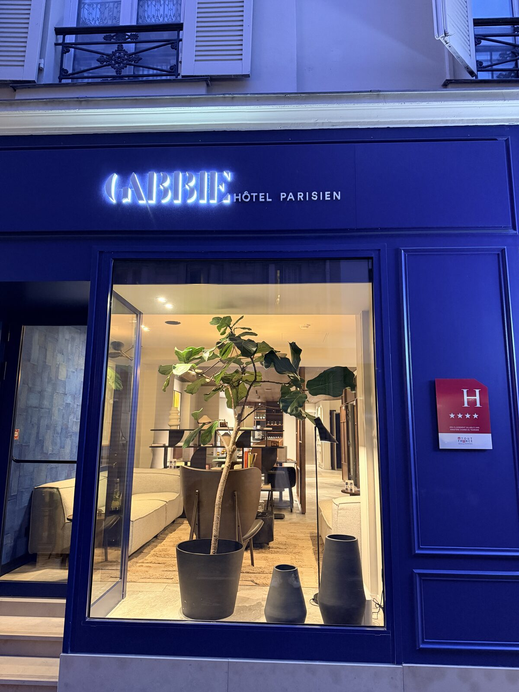
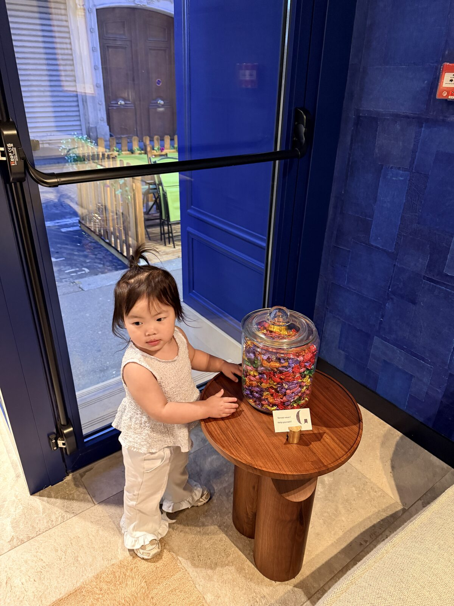
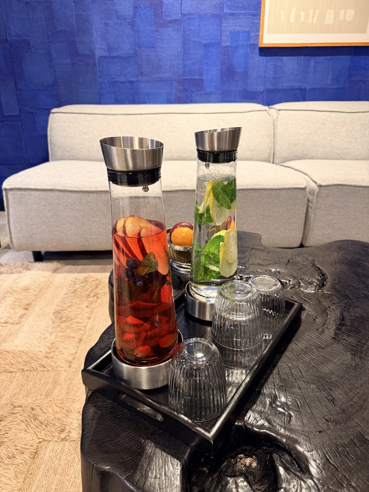
華麗的一整天,被一份速食套餐的價格,輕輕拉回現實。
第一頓巴黎晚餐,是走出去吃的 Five Guys,就在香榭麗舍大道上。下雨的夜晚,霓虹招牌、濕亮的地磚,阿米抱著米米站在店門口。
然後我們被物價嚇到了。一份套餐快 20 歐——台灣的三倍價。整個白天是商務艙、是 MOF 主廚菜單、是克萊因藍的四星精品旅館、是香榭麗舍——一路的「慶祝模式」;結果第一頓巴黎晚餐,被一份 Five Guys 的帳單拉回地面。旅行不是只有優雅,還有「欸這也太貴」的瞬間。
Day 10 收尾:里斯本 McDonald's,訂單 #4244,€22,95,22:35。
Day 11 收尾:巴黎 Five Guys,訂單 #161,€18,65,22:35。
兩天,都是 22:35,都是速食,都是華麗一天的樸素句點。里斯本是麥當勞,巴黎是 Five Guys——同一個時間、不同的城市、不同的價格。這就是雙城日記最誠實的對照組。
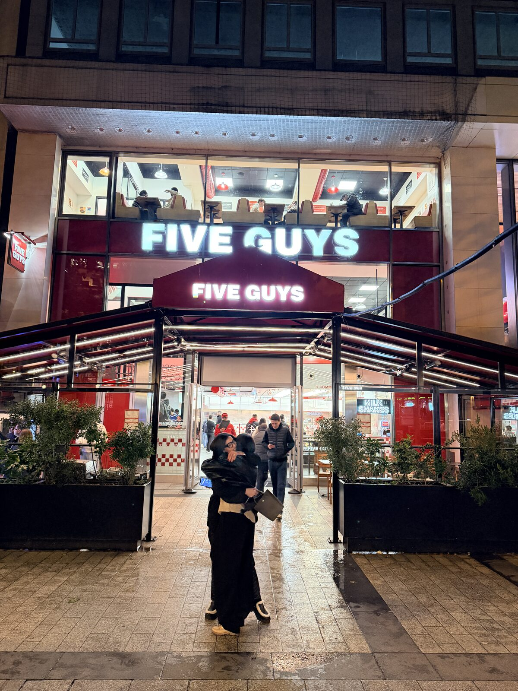
附註一則:Flabelus 那兩雙鞋的退稅 PDF,直到 Day 11 結束都還沒寄到信箱。鞋子保持未拆封,人已經在巴黎了。這條伏筆,還懸著。